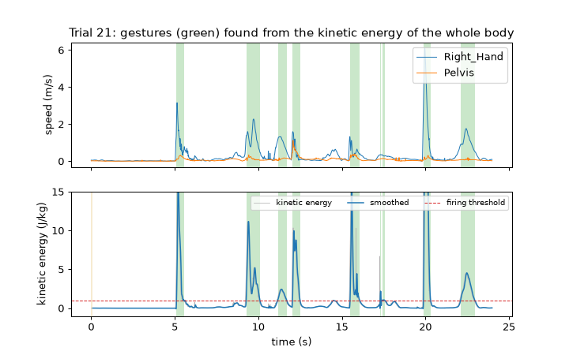
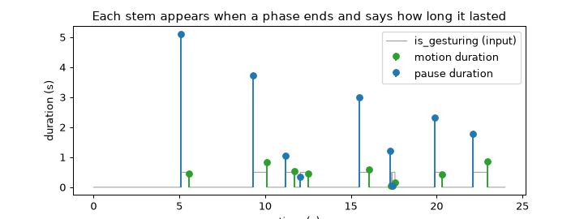
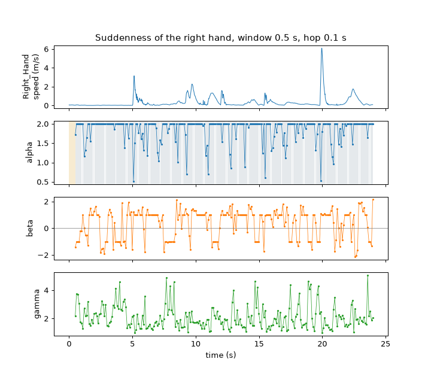
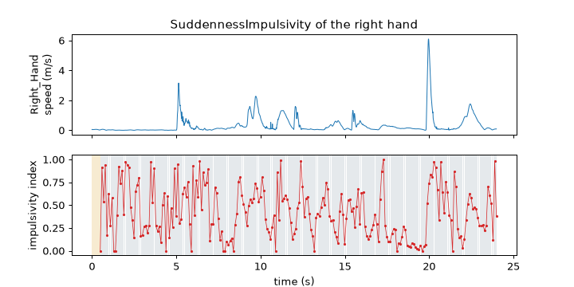
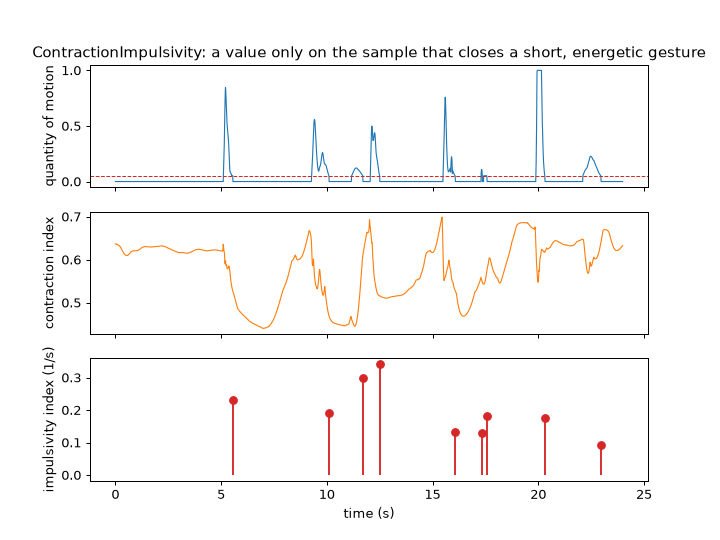
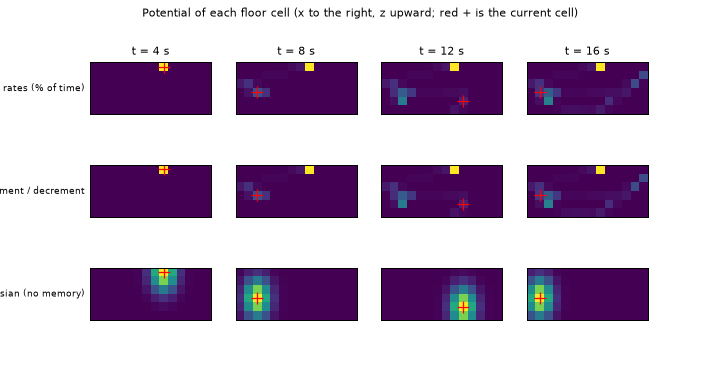
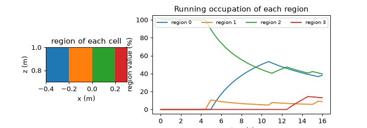

Note
Go to the end to download the full example code.
Gestures and qualities#
A recording is a stream of samples, but people describe movement in units: a wave, a strike, a pause. This tutorial cuts a recording into gestures, measures how long gestures and pauses last, and then describes each stretch of movement with qualities such as suddenness and impulsivity. It ends with the potentials, which describe how a performer uses the space.
- Goals:
segment a recording into gestures with
KineticEnergy,MotionNoiseDetectorandGestureSegmenter; measure motion and pause durations; read the suddenness and the impulsivity of a trajectory and of the whole body; build a running map of the floor occupied by a performer.- Prerequisites:
- Data:
trials 20 to 25 of the example session (impulsive, light and slow movement), seconds 0 to 24, and trial 18 (moving on the floor), seconds 0 to 16.
- Time:
about 30 minutes.
Data used in this tutorial#
Mid-level features describe a movement unit that lasts between half a second and a few seconds (see Layers and the catalog). They are built on signals of the layers below, such as the kinetic energy of the body. We use trial 21 of the example session, where the performer reacts quickly to an unexpected signal by hiding an object behind the back, so the recording is a series of short, sharp gestures separated by calm. Positions are converted to metres and time is in seconds.
import matplotlib.pyplot as plt
import numpy as np
from helpers import shade_status, speed
from pyeyesweb.datasets import load_qualisys_trial
trial = load_qualisys_trial(21, start=0, stop=24).to_units("m")
time = trial.timestamps
print(trial.positions.shape, "frames x joints x coordinates | duration", trial.duration, "s | rate", trial.sampling_rate, "Hz")
(2400, 20, 3) frames x joints x coordinates | duration 24.0 s | rate 100.0 Hz
Segmenting gestures#
A gesture is a period in which the body moves enough. The intensity of the movement is a number per sample that says
how much the body moves; here it is the kinetic energy of the skeleton, computed by
KineticEnergy (energy per unit of mass, see Kinematics and energy).
GestureSegmenter smooths it with a Savitzky-Golay filter and declares a gesture while the
smoothed intensity is at least firing_threshold, in the unit of the intensity. A second stream, the noise flag, can
block the start of a gesture: MotionNoiseDetector sets is_noisy when the speeds of the
joint that decides (the alphabetically last name) jump about at random, as with a tracker that loses a marker. The flag is passed directly to the segmenter
(True means noise: no gesture can start). The pipeline is skeleton, energy, noise flag, segmenter:
from pyeyesweb.low_level import KineticEnergy, MotionNoiseDetector
from pyeyesweb.mid_level import GestureSegmenter
energy = KineticEnergy(skeleton=trial.skeleton, sampling_rate=100).run(trial.positions, timestamps=time)
noise = MotionNoiseDetector(skeleton=trial.skeleton, sampling_rate=100).run(trial.positions, timestamps=time)
segmenter = GestureSegmenter(firing_threshold=1.0)
gestures = segmenter.run(energy.kinetic_energy, noise.is_noisy, timestamps=time)
print(gestures)
starts = time[gestures.is_gesture_start]
print("noisy samples:", int(noise.is_noisy.sum()), "| gestures:", len(starts), "| start times (s):", starts.round(2))
Recorder(GestureSegmenter, rows=2400, columns=['smoothed_intensity', 'is_gesturing', 'is_gesture_start', 'is_gesture_end'], status={'OK': 2390, 'WARMING_UP': 10})
noisy samples: 0 | gestures: 9 | start times (s): [ 5.11 9.28 11.17 12.06 15.5 17.3 17.42 19.89 22.11]
The segmenter needs 10 samples before it can smooth, so its first 10 results are WARMING_UP (yellow). The outputs are
smoothed_intensity, is_gesturing (true during a gesture) and is_gesture_start and is_gesture_end, true on the
sample that opens or closes a gesture.
fig, (top, bottom) = plt.subplots(2, 1, figsize=(8, 5), sharex=True)
top.plot(time, speed(trial.joint("Right_Hand"), 100), lw=0.8, label="Right_Hand")
top.plot(time, speed(trial.joint("Pelvis"), 100), lw=0.8, label="Pelvis")
top.set_ylabel("speed (m/s)")
top.legend(loc="upper right")
bottom.plot(time, energy.kinetic_energy, color="0.7", lw=0.6, label="kinetic energy")
bottom.plot(time, gestures.smoothed_intensity, lw=1.2, label="smoothed")
bottom.axhline(segmenter.firing_threshold, color="C3", ls="--", lw=0.8, label="firing threshold")
for ax in (top, bottom):
edges = np.flatnonzero(np.diff(np.r_[0, gestures.is_gesturing.astype(int), 0]))
for a, b in zip(edges[::2], edges[1::2]):
ax.axvspan(time[a], time[min(b, len(time) - 1)], color="C2", alpha=0.25, lw=0)
shade_status(bottom, time, gestures.status)
bottom.set_ylim(-1, 15)
bottom.set_ylabel("kinetic energy (J/kg)")
bottom.set_xlabel("time (s)")
bottom.legend(loc="upper right", ncol=3, fontsize=8)
top.set_title("Trial 21: gestures (green) found from the kinetic energy of the whole body")

Text(0.5, 1.0, 'Trial 21: gestures (green) found from the kinetic energy of the whole body')
Takeaway. The segmenter turns a one-dimensional intensity into start and end times; the kinetic energy of the skeleton is a natural intensity, and the noise flag keeps tracking errors from being taken for gestures.
What the parameters do#
firing_threshold is the sensitivity: the lower it is, the more of the recording counts as gesture. filter_window_length
(5, 7 or 9) sets the smoothing and must be odd and shorter than the 10 samples of the filter. The threshold is in the unit
of the intensity, so it has to be chosen for the signal. Trial 25, a deliberately slow movement, has far less energy than
trial 21:
slow = load_qualisys_trial(25, start=0, stop=24).to_units("m")
slow_energy = KineticEnergy(skeleton=slow.skeleton, sampling_rate=100).run(slow.positions, timestamps=slow.timestamps)
print(f"{'firing_threshold':>17} {'trial 21 gestures':>18} {'% of time':>10} {'trial 25 gestures':>18} {'% of time':>10}")
for threshold in (0.1, 0.5, 1.0, 2.0, 4.0):
fast = GestureSegmenter(firing_threshold=threshold).run(energy.kinetic_energy)
calm = GestureSegmenter(firing_threshold=threshold).run(slow_energy.kinetic_energy)
print(f"{threshold:>17} {int(fast.is_gesture_start.sum()):>18} {100 * fast.is_gesturing.mean():>10.0f} "
f"{int(calm.is_gesture_start.sum()):>18} {100 * calm.is_gesturing.mean():>10.0f}")
firing_threshold trial 21 gestures % of time trial 25 gestures % of time
0.1 14 51 2 8
0.5 14 27 2 1
1.0 9 18 0 0
2.0 11 12 0 0
4.0 8 7 0 0
The noise flag works on the speed of the joints. A recording with a lost marker, simulated here by adding random jumps
to every joint during the second half of a still stretch, is flagged as noise, and no gesture can start while the flag is
set. noise_threshold is a variance of speed, in m2/s2 for data in metres (set units="mm" for
millimetres).
rng = np.random.default_rng(1)
still = np.repeat(trial.positions[:1], 400, axis=0)
jumpy = still.copy()
jumpy[200:] += rng.normal(scale=0.05, size=jumpy[200:].shape)
for label, frames in (("still", still), ("jumpy from sample 200", jumpy)):
flags = MotionNoiseDetector(skeleton=trial.skeleton, sampling_rate=100).run(frames).is_noisy
intensity = KineticEnergy(skeleton=trial.skeleton, sampling_rate=100).run(frames).kinetic_energy
with_flag = GestureSegmenter(firing_threshold=1.0).run(intensity, flags)
without_flag = GestureSegmenter(firing_threshold=1.0).run(intensity)
print(f"{label:<22} noisy samples: {int(flags.sum()):>3} | gestures with the flag: {int(with_flag.is_gesture_start.sum())}"
f" | without it: {int(without_flag.is_gesture_start.sum())}")
still noisy samples: 0 | gestures with the flag: 0 | without it: 0
jumpy from sample 200 noisy samples: 199 | gestures with the flag: 0 | without it: 1
Takeaway. Choose firing_threshold in the unit of the intensity; pass is_noisy as the second input to stop jitter
from starting gestures.
How long do gestures and pauses last?#
MotionDuration takes the is_gesturing signal (non-zero is motion, zero is pause) and reports
the length of a phase when it ends: a motion duration when a pause begins, a pause duration when a motion begins. With
sampling_rate the durations are in seconds. Most samples have status NO_OUTPUT, because only the sample that ends a
phase has something to report.
from pyeyesweb.mid_level import MotionDuration
durations = MotionDuration(sampling_rate=100).run(gestures.is_gesturing.astype(float), timestamps=time)
motion = durations.motion_duration[~np.isnan(durations.motion_duration)]
pause = durations.pause_duration[~np.isnan(durations.pause_duration)]
print(durations)
print(f"{len(motion)} motion phases, median {np.median(motion):.2f} s | {len(pause)} pauses, median {np.median(pause):.2f} s")
fig, ax = plt.subplots(figsize=(8, 3))
ax.plot(time, gestures.is_gesturing * 0.5, color="0.6", lw=0.8, label="is_gesturing (input)")
ax.stem(time[~np.isnan(durations.motion_duration)], motion, linefmt="C2-", markerfmt="C2o", basefmt=" ", label="motion duration")
ax.stem(time[~np.isnan(durations.pause_duration)], pause, linefmt="C0-", markerfmt="C0o", basefmt=" ", label="pause duration")
ax.set_xlabel("time (s)")
ax.set_ylabel("duration (s)")
ax.legend(loc="upper right")
ax.set_title("Each stem appears when a phase ends and says how long it lasted")

Recorder(MotionDuration, rows=2400, columns=['motion_duration', 'pause_duration'], status={'OK': 18, 'NO_OUTPUT': 2382})
9 motion phases, median 0.45 s | 9 pauses, median 1.79 s
Text(0.5, 1.0, 'Each stem appears when a phase ends and says how long it lasted')
Takeaway. MotionDuration turns the on/off signal of the segmenter into the durations of motion and of pause.
Suddenness of a trajectory#
A movement is sudden when its speed changes in bursts: mostly slow, now and then very fast, like a flick of the hand.
Suddenness looks at the speeds of one point over a window and fits an alpha-stable
distribution to them (Impulsivity and suddenness). Its outputs are alpha (2 is a Gaussian, smaller means
heavier tails, that is more bursts), beta (the skewness: not negative when the bursts are towards large speeds),
gamma and the flag is_sudden. It takes one position per call, and a window of window samples moves by hop
samples. Here, windows of half a second every 0.1 s on the right hand:
from pyeyesweb.mid_level import Suddenness
hand = trial.joint("Right_Hand")
suddenness = Suddenness(window=50, hop=10).run(hand, timestamps=time)
print(suddenness)
fig, axes = plt.subplots(4, 1, figsize=(8, 7), sharex=True)
axes[0].plot(time, speed(hand, 100), lw=0.8)
axes[0].set_ylabel("Right_Hand\nspeed (m/s)")
ok = suddenness.ok
axes[1].plot(time[ok], suddenness.alpha[ok], ".-", ms=3, lw=0.6)
axes[1].set_ylabel("alpha")
axes[2].plot(time[ok], suddenness.beta[ok], ".-", ms=3, lw=0.6, color="C1")
axes[2].axhline(0, color="0.5", lw=0.6)
axes[2].set_ylabel("beta")
axes[3].plot(time[ok], suddenness.gamma[ok], ".-", ms=3, lw=0.6, color="C2")
axes[3].set_ylabel("gamma")
axes[3].set_xlabel("time (s)")
shade_status(axes[1], time, suddenness.status)
axes[0].set_title("Suddenness of the right hand, window 0.5 s, hop 0.1 s")

Recorder(Suddenness, rows=2400, columns=['is_sudden', 'alpha', 'beta', 'gamma'], status={'OK': 236, 'WARMING_UP': 49, 'NO_OUTPUT': 2115})
Text(0.5, 1.0, 'Suddenness of the right hand, window 0.5 s, hop 0.1 s')
The window length is the time scale of the question: a longer window covers several movements, and the classification
answers for all of them together. The table gives the result for four lengths. alpha is exactly 2 (the Gaussian case)
in a window whose speeds have no heavy tail, so beta and gamma carry the detail:
print(f"{'window (s)':>11} {'windows':>8} {'% sudden':>9} {'median beta':>12} {'median gamma':>13}")
for window in (25, 50, 100, 200):
record = Suddenness(window=window, hop=10).run(hand, timestamps=time)
print(f"{window / 100:>11.2f} {int(record.ok.sum()):>8} {100 * record.is_sudden[record.ok].mean():>9.0f} "
f"{np.median(record.beta[record.ok]):>12.2f} {np.median(record.gamma[record.ok]):>13.2f}")
window (s) windows % sudden median beta median gamma
0.25 238 95 0.86 2.00
0.50 236 94 1.00 1.91
1.00 231 94 1.00 1.71
2.00 221 95 1.00 1.57
Takeaway. Suddenness describes the shape of the speed distribution in a window of one trajectory; the window is
the time scale of the question.
Impulsivity of a trajectory#
An impulsive movement is sudden and changes direction sharply, like a strike that stops and returns.
SuddennessImpulsivity multiplies the direction change of the window by the suddenness of the
same trajectory: the index is between 0 and 1 and is 0 when the window is not sudden or the path does not turn. The
parameter direction_change_epsilon sets how close to a right angle a turn must be to count.
from pyeyesweb.mid_level import SuddennessImpulsivity
impulsivity = SuddennessImpulsivity(window=50, hop=10).run(hand, timestamps=time)
print(impulsivity)
fig, axes = plt.subplots(2, 1, figsize=(8, 4), sharex=True)
axes[0].plot(time, speed(hand, 100), lw=0.8)
axes[0].set_ylabel("Right_Hand\nspeed (m/s)")
ok = impulsivity.ok
axes[1].plot(time[ok], impulsivity.impulsivity_index[ok], ".-", ms=3, lw=0.6, color="C3")
axes[1].set_ylabel("impulsivity index")
axes[1].set_xlabel("time (s)")
shade_status(axes[1], time, impulsivity.status)
axes[0].set_title("SuddennessImpulsivity of the right hand")

Recorder(SuddennessImpulsivity, rows=2400, columns=['impulsivity_index'], status={'OK': 236, 'WARMING_UP': 49, 'NO_OUTPUT': 2115})
Text(0.5, 1.0, 'SuddennessImpulsivity of the right hand')
Takeaway. The index is high only for movement that is both sudden and sharply turning, and 0 otherwise.
Impulsivity of the whole body#
ContractionImpulsivity uses the whole body instead of one point. It needs two signals in
[0, 1]: a quantity of motion and the contraction index of the posture, how close the limbs are to the body
(BoundingBoxFilledArea, see Shape, symmetry and balance). A gesture is a run of
samples with the quantity of motion above motion_threshold. If it is short (at most gesture_duration samples) and its
peak reaches peak_threshold, the index on the sample that closes it is the range of the contraction index divided by
the duration in seconds: how fast the body contracted or expanded. Every other sample gives 0.
We build the quantity of motion from the segmenter: its smoothed energy, divided by a fixed 20 (a fixed scale keeps trials comparable) and clipped to [0, 1], and 0 outside the gestures.
from pyeyesweb.low_level import BoundingBoxFilledArea
from pyeyesweb.mid_level import ContractionImpulsivity
quantity = np.clip(np.nan_to_num(gestures.smoothed_intensity) / 20, 0, 1) * gestures.is_gesturing
contraction = BoundingBoxFilledArea().run(trial.positions).contraction_index
body = ContractionImpulsivity(gesture_duration=100, peak_threshold=0.05, sampling_rate=100)
record = body.run(quantity, contraction, timestamps=time)
index = record.impulsivity_index
events = index > 0
print("impulsive gestures:", int(events.sum()), "| at (s):", time[events].round(2))
print("index (1/s):", index[events].round(2), "| duration (samples):", record.gesture_duration[events])
fig, axes = plt.subplots(3, 1, figsize=(8, 6), sharex=True)
axes[0].plot(time, quantity, lw=0.9)
axes[0].axhline(body.peak_threshold, color="C3", ls="--", lw=0.8)
axes[0].set_ylabel("quantity of motion")
axes[1].plot(time, contraction, lw=0.9, color="C1")
axes[1].set_ylabel("contraction index")
axes[2].stem(time[events], index[events], linefmt="C3-", markerfmt="C3o", basefmt=" ")
axes[2].set_ylabel("impulsivity index (1/s)")
axes[2].set_xlabel("time (s)")
axes[0].set_title("ContractionImpulsivity: a value only on the sample that closes a short, energetic gesture")

impulsive gestures: 9 | at (s): [ 5.56 10.11 11.71 12.51 16.08 17.36 17.58 20.32 22.97]
index (1/s): [0.23 0.19 0.3 0.34 0.13 0.13 0.18 0.17 0.09] | duration (samples): [46. 84. 55. 46. 59. 7. 17. 44. 87.]
Text(0.5, 1.0, 'ContractionImpulsivity: a value only on the sample that closes a short, energetic gesture')
Takeaway. ContractionImpulsivity is an event: it is non-zero only when a short energetic gesture ends, and it says how
fast the posture changed.
Comparing conditions#
The same settings on all six trials. Trials 20 and 21 are impulsive (losing balance on one leg; reacting to a signal), 22 and 23 are light, 24 alternates light and heavy, 25 is slow. The table has the number of gestures, the median motion and pause durations, the share of sudden windows and the mean impulsivity of the right hand, and the number of impulsive gestures of the body.
print(f"{'trial':>5} {'gestures':>9} {'motion (s)':>11} {'pause (s)':>10} {'% sudden':>9} {'impulsivity':>12} {'body events':>12}")
for number in (20, 21, 22, 23, 24, 25):
data = load_qualisys_trial(number, start=0, stop=24).to_units("m")
kinetic = KineticEnergy(skeleton=data.skeleton, sampling_rate=100).run(data.positions, timestamps=data.timestamps)
flags = MotionNoiseDetector(skeleton=data.skeleton, sampling_rate=100).run(data.positions, timestamps=data.timestamps)
seg = GestureSegmenter(firing_threshold=1.0).run(kinetic.kinetic_energy, flags.is_noisy)
dur = MotionDuration(sampling_rate=100).run(seg.is_gesturing.astype(float))
point = data.joint("Right_Hand")
sud = Suddenness(window=50, hop=10).run(point)
imp = SuddennessImpulsivity(window=50, hop=10).run(point)
qom = np.clip(np.nan_to_num(seg.smoothed_intensity) / 20, 0, 1) * seg.is_gesturing
ci = BoundingBoxFilledArea().run(data.positions).contraction_index
ev = ContractionImpulsivity(gesture_duration=100, peak_threshold=0.05, sampling_rate=100).run(qom, ci).impulsivity_index
median = lambda x: np.nanmedian(x) if np.isfinite(x).any() else float("nan")
print(f"{number:>5} {int(seg.is_gesture_start.sum()):>9} {median(dur.motion_duration):>11.2f} {median(dur.pause_duration):>10.2f} "
f"{100 * sud.is_sudden[sud.ok].mean():>9.0f} {imp.impulsivity_index[imp.ok].mean():>12.3f} {int((ev > 0).sum()):>12}")
trial gestures motion (s) pause (s) % sudden impulsivity body events
20 23 0.46 0.18 91 0.474 19
21 9 0.45 1.79 94 0.424 9
22 10 0.47 0.34 92 0.356 7
23 6 1.06 1.21 92 0.290 3
24 5 1.20 3.43 87 0.406 2
25 0 nan nan 91 0.459 0
Takeaway. Every feature works on every trial; the slow trial 25 has almost no gestures at this threshold, and the others differ in how many gestures they contain and how long the phases between them last.
Occupation of space: potentials#
The last two features describe not the body but where it is. The floor is divided into a grid of cells, and a
potential is kept for each cell that grows while the performer stands on it. We use the pelvis of trial 18, where the
performer moves and turns around the room, projected on the floor (the vertical axis of the recording is y, so the
floor is x and z). HitCellDetector turns a position into the cell
(row, column) that contains it: 14 columns of 0.05 m along x and 6 rows of 0.05 m along z.
from pyeyesweb.physical_signals import HitCellDetector
walk = load_qualisys_trial(18, start=0, stop=16).to_units("m")
floor = walk.joint("Pelvis")[:, [0, 2]]
hits = HitCellDetector(cells_along_x=14, cells_along_y=6, x_min=-0.4, x_max=0.3, y_min=0.7, y_max=1.0, units="m")
cells = np.stack(list(hits.run(floor[:, None, :], timestamps=walk.timestamps).cells)) # (frames, 1, 2) of (row, column)
print("hit cells:", cells.shape, "| first:", cells[0, 0], "| rows", cells[..., 0].min(), "to", cells[..., 0].max(),
"| columns", cells[..., 1].min(), "to", cells[..., 1].max())
hit cells: (1600, 1, 2) | first: [5 8] | rows 0 to 5 | columns 0 to 13
PositionDependingPotentials keeps a matrix with one potential per cell. With
potential_type="occupation_rates" the potential of a cell is the percentage of the calls in which it was hit, so the
matrix sums to 100 and shows where the performer spent time; with "increment_decrement" a hit cell gains
increment_factor and every other cell loses decrement_factor, a leaky count in which old visits fade; the Gaussian
type has no memory and draws a spot on the present cell.
from pyeyesweb.mid_level import PositionDependingPotentials
kinds = {
"occupation rates (% of time)": dict(potential_type="occupation_rates"),
"increment / decrement": dict(potential_type="increment_decrement", increment_factor=1.0, decrement_factor=0.001),
"Gaussian (no memory)": dict(potential_type="gaussian", gaussian_sigma_x=1.5, gaussian_sigma_y=1.0),
}
maps = {name: np.stack(list(PositionDependingPotentials(cells_along_x=14, cells_along_y=6, **kw).run(
cells, timestamps=walk.timestamps).potential)) for name, kw in kinds.items()}
print("potential matrices over time:", maps["occupation rates (% of time)"].shape)
print("occupation rates sum to", maps["occupation rates (% of time)"][-1].sum().round(1), "% at the end")
moments = [int(s * 100) for s in (4, 8, 12, 15.9)]
fig, axes = plt.subplots(len(maps), len(moments), figsize=(8, 4.2), squeeze=False)
for row, (name, array) in enumerate(maps.items()):
for column, frame in enumerate(moments):
ax = axes[row, column]
ax.imshow(array[frame], origin="lower", cmap="viridis", extent=(-0.4, 0.3, 0.7, 1.0))
i, j = cells[frame, 0]
ax.plot(-0.4 + 0.05 * (j + 0.5), 0.7 + 0.05 * (i + 0.5), "r+", ms=9)
ax.set_xticks([])
ax.set_yticks([])
ax.grid(False)
if row == 0:
ax.set_title(f"t = {frame / 100:.0f} s", fontsize=9)
if column == 0:
ax.set_ylabel(name, fontsize=7, rotation=0, ha="right", va="center")
fig.suptitle("Potential of each floor cell (x to the right, z upward; red + is the current cell)", fontsize=9)

potential matrices over time: (1600, 6, 14)
occupation rates sum to 100.0 % at the end
Text(0.5, 0.98, 'Potential of each floor cell (x to the right, z upward; red + is the current cell)')
RegionDependingPotentials does the same for regions: groups of cells given by a mask
with the region of each cell. It keeps one value per region. parts chooses which outputs are produced; here the cell
matrix and the value of each region. We split the room in four vertical bands, from left to right.
from pyeyesweb.mid_level import RegionDependingPotentials
mask = np.tile(np.minimum(np.arange(14) // 4, 3), (6, 1))
zones = RegionDependingPotentials(cells_along_x=14, cells_along_y=6, potential_type="occupation_rates_linear", mask=mask,
number_of_regions=4, parts=("potential", "region_values"))
zone_record = zones.run(cells, timestamps=walk.timestamps)
values = np.stack(list(zone_record.region_values))
print("parts:", zones.parts, "| final value of each region (%):", values[-1].round(1), "| sum:", values[-1].sum().round(1))
fig, axes = plt.subplots(1, 2, figsize=(8, 2.8), gridspec_kw={"width_ratios": [1, 2.2]})
axes[0].imshow(mask, origin="lower", cmap="tab10", vmin=0, vmax=9, extent=(-0.4, 0.3, 0.7, 1.0))
axes[0].set_xlabel("x (m)")
axes[0].set_ylabel("z (m)")
axes[0].set_title("region of each cell")
axes[0].grid(False)
for region in range(4):
axes[1].plot(walk.timestamps, values[:, region], label=f"region {region}")
axes[1].set_xlabel("time (s)")
axes[1].set_ylabel("region value (%)")
axes[1].legend(ncol=4, fontsize=8)
axes[1].set_title("Running occupation of each region")

parts: ('potential', 'region_values') | final value of each region (%): [38.2 8.9 39.8 13.1] | sum: 100.0
Text(0.5, 1.0, 'Running occupation of each region')
Takeaway. The potentials turn a stream of hit cells into a running map of the floor, by cell or by region.
Try it#
Segment trial 22 (light movement) with
firing_threshold0.5 and 2.0. How many gestures are found, and how much of the time is spent gesturing, in each case?Compute
Suddennessof the right hand of trial 25 with a window of 1 s, and compare the medianbetawith that of trial 21.Change the grid of the potentials to 7 columns of 0.1 m (and 3 rows). Which cell is the most visited, and for what percentage of the time?
Solutions#
Exercise 1. The lower threshold accepts more of the recording as gesture.
light = load_qualisys_trial(22, start=0, stop=24).to_units("m")
light_energy = KineticEnergy(skeleton=light.skeleton, sampling_rate=100).run(light.positions, timestamps=light.timestamps)
for threshold in (0.5, 2.0):
found = GestureSegmenter(firing_threshold=threshold).run(light_energy.kinetic_energy)
print(f"threshold {threshold}: {int(found.is_gesture_start.sum())} gestures, {100 * found.is_gesturing.mean():.0f}% of the time")
threshold 0.5: 4 gestures, 80% of the time
threshold 2.0: 14 gestures, 39% of the time
Exercise 2. A window of 1 s is 100 samples.
for number in (25, 21):
point = load_qualisys_trial(number, start=0, stop=24).to_units("m").joint("Right_Hand")
result = Suddenness(window=100, hop=10).run(point)
print(f"trial {number}: median beta {np.median(result.beta[result.ok]):.2f}")
trial 25: median beta 0.85
trial 21: median beta 1.00
Exercise 3. Cells of 0.1 m along both axes: the grid is 7 columns by 3 rows.
coarse_hits = HitCellDetector(cells_along_x=7, cells_along_y=3, x_min=-0.4, x_max=0.3, y_min=0.7, y_max=1.0, units="m")
coarse_cells = np.stack(list(coarse_hits.run(floor[:, None, :], timestamps=walk.timestamps).cells))
coarse = PositionDependingPotentials(cells_along_x=7, cells_along_y=3, potential_type="occupation_rates")
final = np.stack(list(coarse.run(coarse_cells, timestamps=walk.timestamps).potential))[-1]
print(final.round(1))
print("most visited cell (row, column):", tuple(int(i) for i in np.unravel_index(final.argmax(), final.shape)), "with", final.max().round(1), "%")
[[ 1.1 12.9 1.9 1.7 6. 0.6 0. ]
[10.5 13.3 0.7 1.2 1.8 3.5 6.8]
[ 0. 0.4 1. 2.3 27.8 0. 6.4]]
most visited cell (row, column): (2, 4) with 27.8 %
Next steps#
Gesture segmentation and Impulsivity and suddenness: the definitions behind the features of this tutorial; Shape, symmetry and balance for the contraction index and the space potentials.
Mid-level features: every mid-level feature with its parameters.
Analysis primitives: complexity, rarity, periodicity: the next tutorial turns to the analysis primitives: entropy, rarity and periodicity of a signal.
Total running time of the script: (0 minutes 11.353 seconds)